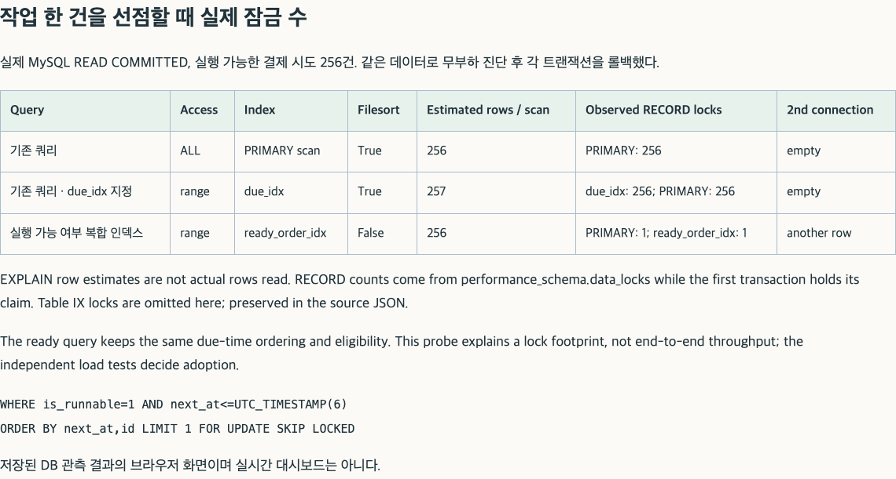

PAYMENT CAPACITY / RETRIES / FINITE STOCK
결제 접수 재시도의 한계와 선점 인덱스·만료 배치 개선
모구시장은 한정 재고를 예약한 뒤 외부 PG 승인을 확인해 구매를 확정한다. 재고 예약과 결제 실행 슬롯은 별개여서, 미확정 결제 상한 256건이 차면 이미 예약한 고객도 결제 접수를 거절당한다. 이 상황에서 제한 재시도는 일부 고객의 구매를 가능하게 했지만 전체 구매 완료 건수는 줄였으므로 기본 정책으로 채택하지 않았다. 대신 결제 작업 선점 쿼리의 과도한 잠금과 예약마다 발생하는 만료 커밋을 개선했다. 복합 인덱스로 선점 범위를 줄이고 원래 버킷별 반환 수량을 합산해 여러 예약을 한 트랜잭션에서 처리한 조합은, 재고가 충분한 과부하 조건의 동일 입력 비교에서 구매 완료 건수를 늘리고 구매당 처리 비용을 낮췄다.
이 글의 100·400건/초는 신규 논리 사용자 도착률이다. 90초 입력에서 결제 50%·취소 25%·만료 대기 25%를 배정하므로 결제 대상은 각각 4,500명·18,000명이다. 10초 기한은 예약 요청을 시작한 시각부터 센다. 1회 시도는 클라이언트가 결제 접수를 한 번 요청하는 정책이며, 서버의 PG 승인 복구·주기 조회는 두 정책 모두 유지한다.
클라이언트의 결제 접수를 한 번으로 유지하고 서버의 선점 인덱스와 만료 처리를 함께 바꾼 결과, 400건/초의 10초 내 구매는 평균 4,405명/18,000명으로 커밋 직전 슬롯 검사 구조보다 26.24% 증가했다. 같은 집계 시간창의 구매 1,000건당 전체 CPU도 303.54초에서 220.47초로 줄어, 더 많은 구매를 완료하면서 단위 처리 비용을 낮췄다. 다음 결제 작업을 고르는 쿼리에는 복합 인덱스를 적용했고, 만료 예약은 최대 32건씩 묶어 원래 재고 버킷별로 수량을 합산한 뒤 한 번에 커밋했다. 클라이언트의 제한 재시도는 기본 정책에서 제외했으며, 100건/초에서는 세 반복 모두 4,500명 전원이 기한 내 구매했다.
재고 16분할·웹훅 조회 앞당김·워커 직접 선점을 공통으로 사용하는 세 구조를 비교했다. 본문에서 워커 직접 선점은 기존 슬롯 검사 위치를 유지한 구조, 커밋 직전 슬롯 검사는 슬롯 카운터 변경을 커밋 직전으로 옮긴 구조, 선점 인덱스·만료 배치는 두 번째 구조에 인덱스와 배치를 함께 추가한 구조를 뜻한다. 26.24%는 마지막 두 구조의 차이이며, 인덱스와 배치 각각의 독립 개선율이 아니다.
결제 접수 재시도에 따른 구매 완료 건수 변화
클라이언트가 결제 접수를 1회만 시도하는 정책과 추가로 최대 3회 재시도하는 정책을 비교했다. 재시도는 HTTP 503의 코드가 정확히 PAYMENT_ADMISSION_CLOSED일 때만 수행하며, 같은 reservation·paymentKey·orderId·금액·통화·Idempotency-Key로 0.5·1·2초 간격에 독립 ±20% jitter를 적용해 요청한다. 논리 요청의 최초 시작 후 10초를 넘겨 보내지 않고 원래 예약 TTL 15초도 늘리지 않는다. 다른 응답을 받거나 접수에 성공하거나 횟수 한도에 도달하면 중단하며, 응답 유실은 이 명시적 재시도 대상에 포함하지 않는다.
first logical arrival: reserve → test PG authentication → payment
if HTTP 503 AND code == PAYMENT_ADMISSION_CLOSED:
retry same reservation/body/key, at most 3 additional calls
delays = [0.5, 1.0, 2.0] seconds × independently seeded jitter
stop before original logical start + 10 seconds
else:
no new payment identity; observe ambiguous state and durable recovery선점 인덱스·만료 배치 구조에서 제한 재시도를 기본 정책으로 채택하지 않은 이유는, 일부 고객의 재시도 성공보다 전체 구매 감소와 추가 호출 비용이 컸기 때문이다. 400명/초 조건에서 처음 결제 접수를 거절당한 고객 중 평균 1,318.33명이 재시도로 최초 예약 요청 후 10초 내에 구매했지만, 전체 기한 내 구매는 1회 시도의 4,405명에서 재시도 조건의 2,839명으로 감소했고 결제 API 호출은 평균 18,741회 늘었다. 재시도 후 구매한 수만으로 개선을 판단하면, 같은 입력에서 구매하지 못하게 된 고객과 처음 결제하는 고객의 결과를 놓치게 된다.

최초 접수율은 실제로 첫 결제 API를 호출한 사용자를 분모로 한다. 예약부터 거절된 사용자까지 포함하려면 최초 접수 후 10초 내 구매 수를 전체 계획된 결제 대상 수로 나눠야 한다. 이때 202는 접수 수로만 집계하고, 첫 응답 지연에는 빠른 거절도 포함되므로 이 지연과 최초 결제 고객의 구매율·전체 결제 대상의 구매 결과를 함께 평가했다.
결제 재시도가 늘면 같은 서버 자원을 사용하는 신규 예약에도 영향을 준다. 예약을 거절당한 사용자는 결제를 시도할 기회 자체가 없으므로 예약 성공자만 분모로 삼으면 손실을 놓친다. 예약·접수·승인·구매 단계별 전체 결과는 재시도 상세 근거에 제시했다.
LIMIT 1 선점 쿼리의 잠금 범위
PG 승인 시각은 독립 원장에서 사후 확인할 수 있지만 서버는 응답이나 조회로 관측하기 전까지 알 수 없다. 작업 선택에 사용할 수 있는 정보는 최초 실행 여부(rounds=0), 미처리 dirty 신호, 다음 조회 시각 next_at, 수락한 취소 의사와 이미 확인한 승인 사실이다. 이를 최초 승인(FIRST_ROUND), 알림 후 조회(SIGNALED), 주기 조회(POLL), 취소 실행(CANCEL_READY)으로 구분해 선점 수·실행 예정 시각 이후 대기 시간·빈 조회·HTTP 결과·DB 단계 시간을 수집했다. 웹훅은 인증된 PG 조회를 앞당기는 신호로만 사용한다.
한 건을 반환하는 선점 쿼리가 다른 워커의 작업까지 잠그고 있었다. 기존 workflow != RESOLVED ORDER BY next_at,id LIMIT 1 FOR UPDATE SKIP LOCKED는 여러 workflow 범위를 읽은 뒤 정렬했으며, 실행 가능한 256개 행을 둔 READ COMMITTED 진단에서는 한 건만 반환해도 PRIMARY 256개를 잠갔다. 두 번째 연결이 빈 결과를 받은 이유도 처리할 작업이 없어서가 아니라 그 작업들이 이미 잠겨 있었기 때문이다. 활성 여부를 generated column으로 만들고 (is_runnable,next_at,id)에서 등가 검색하자 PRIMARY 한 건과 보조 인덱스 한 건만 잠갔으며 두 번째 연결도 다른 거래를 가져갔다. SKIP LOCKED는 잠긴 행을 기다리지 않고 건너뛰기 때문에 data_lock_waits가 작아도 작업 배분이 막힐 수 있어, 빈 선점 결과와 실행 예정 시각 이후 대기 시간을 함께 확인했다. 이 무부하 진단은 잠금 범위를 확인한 것이며, 실행 시간의 마이크로초 차이를 처리량 개선율로 사용하지 않았다.
ALTER TABLE attempts
ADD is_runnable TINYINT AS (workflow <> 'RESOLVED') STORED,
ADD INDEX ready_order_idx(is_runnable, next_at, id);
SELECT * FROM attempts
WHERE is_runnable = 1 AND next_at <= UTC_TIMESTAMP(6)
AND (lease_until IS NULL OR lease_until <= UTC_TIMESTAMP(6))
ORDER BY next_at, id LIMIT 1 FOR UPDATE SKIP LOCKED;
인덱스 변경 후에도 워커 4개, 미확정 결제 256건, 다음 조회 시각과 오래된 예정 작업 우선순위는 동일하다. 네 작업 종류와 미래 예정 작업, 유효한 lease, RESOLVED를 섞은 rollback-only 선택 시험을 실제 PG 회귀와 구분해 수행했다. 주기 조회나 취소를 다른 작업보다 항상 뒤로 미루는 정책은 추가하지 않았다. SKIP LOCKED로 물리 HTTP 도착 순서의 FIFO를 보장할 수는 없으며, 추가 B-tree의 쓰기·저장 비용도 남는다. 선점 인덱스의 실제 잠금 비교 · MySQL ORDER BY 인덱스 조건 · 스캔과 레코드 잠금 계약
만료 예약의 재고 반환을 배치로 처리
만료 처리에서 줄이려던 비용은 예약마다 반복되는 커밋이었다. 기존에도 한 번에 최대 32건을 선택했지만 트랜잭션과 커밋은 예약별로 실행했으므로, 선점 인덱스를 바꾼 구조에 여러 예약의 반환을 함께 커밋하는 배치를 추가했다. 변경 후에는 같은 32건의 사용자별 중복 배정 잠금 행(guard)을 sale/user 순으로 잠그고 예약을 잠근 다음, 현재 상태가 HELD이며 DB 시각으로 만료됐는지 다시 검사한다. 반환 수량을 각 예약이 재고를 배정받은 버킷별로 합산해 버킷 ID 순서대로 재고를 갱신한 뒤, 예약의 만료 상태 변경과 재고 반환을 포함한 트랜잭션을 커밋한다. TTL, 워커 수, 한 번에 선택하는 수와 결제 상한은 유지했다.
due candidates: at most 32
sort candidates by (sale_id, user_id)
BEGIN
lock all user guards in that total order
lock reservations; recheck HELD and expires_at using DB time
mark EXPIRED; clear matching active_id only
aggregate returns by original (sale_id, bucket_id)
update inventory buckets in sorted order
COMMIT
emit each terminal observation after commit일반 거래는 한 guard를 잡은 뒤 재고로 가는 반면, 배치는 재고를 잡기 전에 모든 guard를 같은 순서로 잡으며 두 배치가 경쟁할 때도 이 순서를 따른다. 결제가 먼저 잠그면 PAYMENT_PENDING을 보고 건너뛰고, 만료가 먼저 끝나면 결제는 NOT_HELD를 받는다. 32건의 재고·상태 변경 뒤 커밋 직전 실제 프로세스를 KILL하면 모두 롤백되고 재기동 후 다시 반환된다. 두 JVM의 같은 64건 경쟁에서도 반환은 한 번이었다. 대신 최대 32명의 guard와 여러 버킷을 한 트랜잭션에 보유하는 비용이 생기므로 정상 신규 예약과 최초 결제 결과도 비교한다. 만료 배치의 경쟁·중단·재기동 검증 · 만료 배치의 비교 가설.

구매 결과를 판단하는 본 비교에는 선점 인덱스와 만료 배치를 함께 적용했다. 앞선 짧은 실험에서는 인덱스 단독 변경과 배치 추가를 분리했지만, 90초·3회 비교의 전체 개선율을 각각의 순수 효과로 나눌 수는 없다.
만료 커밋을 줄인 비율이 그대로 DB CPU 절감률이 되지는 않는다. 같은 32건의 반환을 묶어도 처리 가능한 구매가 늘면 결제 쓰기가 추가되기 때문에, 전체 COMMIT 수뿐 아니라 fsync·로그 I/O와 신규 구매 수를 함께 평가했다. 구성요소별 진단의 표본 구간도 서로 달라 단순 합산하지 않았다. 채택 여부에 사용한 전체 CPU는 아래에서 구매 수와 정확히 같은 시간창으로 집계했다.
결제 슬롯 사전 조회의 효과와 한계
결제 슬롯 사전 조회는 잠금 대기를 줄였지만 구매 결과가 나빠져 제외했다. 예비 시험에서 budgets 잠금 대기 표본은 약 109→26 waiter-seconds로 줄어든 반면 기한 내 구매는 992→720명으로 감소해, 잠금 지표만의 개선을 채택 근거로 삼을 수 없었다. 이 대안은 커밋 직전 슬롯 검사 구조에 잠금 없는 사전 SELECT를 추가하고, 슬롯이 이미 가득 차면 attempt·operation을 쓰기 전에 거절한다. 기존 멱등 응답 재생·소유권·금액·TTL 검증을 먼저 수행하며 최종 수락은 원자적 조건부 증가로 결정해, 두 JVM에서도 전역 상한은 넘지 않았다. 다만 이 수치는 최종 공통 오류 응답 보완 전의 25초 탐색 결과이며 해당 원본을 보존했다. 슬롯 사전 조회 가설 · 슬롯 사전 조회의 예비 비교 결과
구조별 구매 완료 건수·지연·CPU 비교
결제 50%·취소 25%·만료 대기 25% 비율을 유지하면서 사용자 순열, 행동 shuffle, PG 적용 지연·승인 응답 유실·웹훅 유실, 재시도 jitter에 각각 별도 seed stream을 사용했다. PG 승인 효과의 예정 지연은 0.3–1.0초의 8개 구간이고 승인 응답 연결 유실 20%·웹훅 유실 20%를 독립 stream으로 정한다. 별도 HTTP 응답 지연·조회 지연·웹훅 지연은 0이며 실제 효과 지연에는 시뮬레이터의 실행 비용도 포함된다. 같은 반복의 모든 후보는 같은 논리 사용자와 장애 tuple을 받는다. 재시도를 새 iteration이나 새 구매 기회로 세지는 않지만, k6의 실제 HTTP 수와 추가 결제 호출, dropped iterations, CPU는 모두 비용에 포함한다.
워밍업 20초@10/s와 5초 간격 뒤 90초를 측정했다. 100/s와 400/s는 독립 실행이며 반복 seed는 61001–61003이다. 각 거래에 최초 논리 시작 후 10초라는 같은 관찰 기한을 부여하되, 기한 뒤 구매도 실패로 지우지 않고 원장에 별도로 남겼다. 창 안 구매/s는 이전 도착 거래가 그 창에서 확정된 것도 포함하며 cohort 기한 내 비율과 다르다.
DB 2 CPU quota/1GiB, JVM heap 384MiB·ActiveProcessorCount=2, pool 48, 워커 4, pending 256, admission 24, HTTP 연결 2048, scheduler 2를 같게 뒀다. JVM의 프로세서 힌트는 전용 코어나 CPU quota가 아니다. 앱·DB VM·PG 시뮬레이터·k6·관찰기가 같은 M5/16GiB 노트북과 디스크를 공유한다. 전체 호스트 CPU에는 발생기와 백그라운드 작업도 포함하되, guest DB CPU를 다시 더하지 않았다.
| 입력/s | 구조 / 정책 | 10초 내 구매 | 창 안 구매/s | 성공 p99 s | 만료 반환 p99 s | 전체 CPU s | CPU s/1,000구매 |
|---|---|---|---|---|---|---|---|
| 100 | 워커 직접 선점 / 1회 시도 | 96.95 [90.84–100.00]% | 46.82 [42.58–49.01] | 6.65 | 0.30 | 1,683.94 | 125.78 |
| 100 | 워커 직접 선점 / 제한 재시도 | 98.06 [95.96–100.00]% | 46.73 [45.59–48.94] | 8.49 | 0.28 | 1,805.71 | 132.93 |
| 100 | 커밋 직전 슬롯 검사 / 1회 시도 | 100.00 [100.00–100.00]% | 48.80 [48.26–49.12] | 3.02 | 0.26 | 1,643.43 | 119.09 |
| 100 | 커밋 직전 슬롯 검사 / 제한 재시도 | 99.21 [97.62–100.00]% | 47.59 [45.53–49.03] | 7.04 | 0.28 | 1,666.68 | 121.64 |
| 100 | 선점 인덱스·만료 배치 / 1회 시도 | 100.00 [100.00–100.00]% | 49.26 [49.13–49.50] | 2.55 | 0.26 | 1,757.94 | 127.39 |
| 100 | 선점 인덱스·만료 배치 / 제한 재시도 | 100.00 [100.00–100.00]% | 49.28 [49.16–49.42] | 2.25 | 0.25 | 1,752.11 | 126.96 |
| 400 | 워커 직접 선점 / 1회 시도 | 14.66 [11.45–17.91]% | 29.58 [26.03–33.01] | 11.60 | 196.63 | 3,297.75 | 364.07 |
| 400 | 워커 직접 선점 / 제한 재시도 | 4.64 [4.07–5.63]% | 23.74 [22.88–24.74] | 15.37 | 150.38 | 2,773.60 | 346.74 |
| 400 | 커밋 직전 슬롯 검사 / 1회 시도 | 19.39 [18.48–20.49]% | 35.90 [34.09–38.11] | 8.72 | 189.84 | 3,268.53 | 303.54 |
| 400 | 커밋 직전 슬롯 검사 / 제한 재시도 | 7.07 [6.72–7.38]% | 25.91 [25.56–26.60] | 14.98 | 135.71 | 2,769.69 | 320.60 |
| 400 | 선점 인덱스·만료 배치 / 1회 시도 | 24.47 [23.91–24.76]% | 46.08 [44.96–46.64] | 6.70 | 122.57 | 2,979.66 | 220.47 |
| 400 | 선점 인덱스·만료 배치 / 제한 재시도 | 15.77 [14.12–16.72]% | 31.51 [29.29–32.69] | 12.34 | 98.48 | 2,804.80 | 278.34 |

기존 대안 가운데 400건/초에서 구매 결과가 가장 좋았던 것은 커밋 직전 슬롯 검사 구조로, 평균 3,489.33명이 기한 내 구매했고 구매 1,000건당 CPU는 303.54초였다. 선점 인덱스·만료 배치 구조는 같은 재시도 정책을 적용한 두 기존 구조보다 나았으며, 최종 1회 시도 정책에서도 사전에 정한 구매·최초 결제 고객·비용·꼬리 지연 조건을 모두 충족했다. 다만 100건/초의 구매 1,000건당 CPU는 119.09초에서 127.39초로 6.97% 증가해, 사전 한도 10% 안이기는 해도 저부하 비용은 늘었다. 제한 재시도를 적용하면 처음 결제 접수를 거절당한 고객 중 평균 1,318.33명이 기한 내 구매를 완료했다. 반면 전체 기한 내 구매는 4,405명에서 2,839명으로 1,566명 감소했고, 최초 결제 고객의 구매 결과와 추가 비용 조건도 충족하지 못했다. 예산 사전 조회는 짧은 판별 실험에서 잠금 대기를 줄였지만 구매가 992명에서 720명으로 감소해 제외했다. 선점 인덱스 단독 구현은 중간 비교 대상으로 남겼으며 최종 조합의 전체 개선율을 단독 효과로 계산하지 않았다.
400명/초는 개선 후에도 과부하다. 결제 대상의 24.47%만 기한 내 구매했고 만료 반환 p99는 122.57초였다. 성공한 구매의 p99 6.70초만으로 전체 고객의 결과를 설명할 수 없다. 100명/초의 구매당 CPU는 6.97% 증가했다.
재고 3,000개 조건의 반환·재배정·구매 결과
200만 개 재고 조건에서는 지속 쓰기의 병목을 찾는 데 집중했으므로, 실제 한정 재고에서의 고객 효과는 별도로 3,000개·16버킷·400명/s·90초 조건에 같은 행동과 장애 입력을 적용해 확인했다. 취소·만료 반환을 기다리는 동안에도 새로운 고유 사용자가 들어오도록 했으며, 같은 사용자에게 재고 예약 자체를 무한 재시도하게 만들지는 않았다. 희소 재고에서는 선호 버킷이 비면 다른 버킷을 찾으므로 실제 original_bucket_id로 원장을 다시 집계한다.

| 차이 | 10초 내 구매 | 전체 구매 | 첫 접수 구매 | 물리 결제 호출 |
|---|---|---|---|---|
| 선점 인덱스·만료 배치 − 워커 직접 선점 / 1회 시도 | +26 / +54 / +36 | +26 / +54 / +36 | +26 / +54 / +36 | +323 / +204 / +153 |
| 선점 인덱스·만료 배치 − 워커 직접 선점 / 제한 재시도 | +64 / +63 / +102 | +47 / +43 / +74 | -884 / -848 / -785 | +1912 / +1936 / +1834 |
| 선점 인덱스·만료 배치 − 커밋 직전 슬롯 검사 / 1회 시도 | +47 / +46 / +29 | +47 / +46 / +29 | +47 / +46 / +29 | +301 / +220 / +156 |
| 선점 인덱스·만료 배치 − 커밋 직전 슬롯 검사 / 제한 재시도 | +37 / +51 / +62 | +27 / +37 / +45 | -877 / -794 / -770 | +2081 / +1958 / +1728 |
재고 단위마다 고유 식별자가 있는 것은 아니므로 반환된 한 개가 어느 후속 구매에 배정됐는지 직접 추적할 수 없다. 같은 버킷의 반환 이후 다음 배정 시각을 연결하되, 여러 반환이 같은 다음 배정을 가리킬 수 있다. afterCommit 관측도 ms 정밀도이며 DB 직렬화 순서를 기록한 시계는 아니다. 따라서 재배정량의 하한, 후속 구매 거래, 동일 수요 대조군과의 총 구매 차이를 함께 확인했다. 반환 수를 추가 구매 수로 간주하지 않았으며, 재고 3,000개라는 구매 상한과 서버 처리량도 구분했다.
각 버킷의 반환량·최소 재배정량·초기 quota 이후 구매 cohort·반환 후 다음 활동 지연과 관찰 중 전역 재고 0 표본을 함께 보존했다. 작업 대기·재고 반환 분석 · 선점 인덱스·만료 배치 · 1회 시도 · 400건/초 · 1회차 · 선점 인덱스·만료 배치 · 제한 재시도 · 400건/초 · 1회차. 재시도의 유한 재고 순증감도 같은 원본의 finite_pairs에서 대조할 수 있다.
결제 접수 거절 시 롤백과 만료 처리의 동시성 검증
PAYMENT_ADMISSION_CLOSED를 받은 거래는 같은 예약·결제 정보·멱등키로 다시 접수할 수 있었다. 실제 MySQL에서 pending 상한을 1로 두고 워커를 멈춘 뒤 첫 결제가 슬롯을 점유한 동안 두 번째 예약의 같은 키를 세 번 호출하자 모두 명시적 503을 받았지만, attempt·operation·pay request_result는 남지 않고 HELD와 원래 expires_at은 유지됐다. 첫 슬롯을 반환한 뒤에는 같은 정보와 키가 202로 접수됐고 중복 호출도 저장된 응답을 돌려줬다. 이 롤백 확인이 있으므로 명시적 접수 거절을 응답만 유실된 거래와 구분해 재시도할 수 있다.
반면 커밋 이후 응답을 실패시키는 pay_after_commit 시험에서는 DB에 PAYMENT_PENDING이 남았으므로, 일반 503이나 전송 실패만으로 미접수를 판정할 수는 없다. 이 경우 예약 GET과 DB에 저장된 결제 시도를 이용해 결과를 확인·복구하며, 재고 반환이나 새 결제 키 생성으로 처리하지 않는다. 접수 거절의 롤백·재접수 검증 · 만료 배치 구조의 재접수 검증
커넥션 풀 포화 시험에서는 트랜잭션을 시작하지 못할 때 500을 반환하는 공통 오류 처리를 발견했다. DataAccessException과 함께 TransactionException도 DB 오류 503으로 분류하도록 모든 비교군을 수정했다. 이 일반 DB 오류는 저장 여부가 불명일 수 있어 PAYMENT_ADMISSION_CLOSED와 구분한다. 풀 시험에서는 웹훅의 커넥션 사용 간섭을 제거하고 hook으로 실제 16개 커넥션 점유를 확인한 뒤, 조회·쓰기 timeout과 같은 키의 정상 처리를 검증했다. 최초 실패와 원인 정정 자료도 보존했다. 커넥션 풀 포화의 오류 처리 · 최종 장애·복구 회귀 결과
구매 후 CANCELED→결합 오류→재기동→DONE에서도 수동 검토 충돌을 영속 보존한다. KRW 1000.9 승인 금액과 0.9 취소 잔액은 정수로 잘라 수용하지 않는다. 추가 종결 CONFIRM/CANCEL 0과 정상 1000/0의 수렴을 실제 MySQL·HTTP PG에서 확인했다. 종결 충돌·금액 결함의 수정 전후 원장과 코드. 실제 테스트 카드 인증·앱 구매·전액 취소·알림 재전송은 이전 별도 소수 거래에서 확인했으며 실제 발신자 서명 검증은 미완료다. 이번 합성 부하는 실제 PG에 보내지 않았다.
추가 시험에서는 처음 24건 중 12건의 승인 응답과 알림을 잃게 하고 승인 실행 허가 뒤 취소를 수락시킨 상태에서, 120명의 새로운 구매가 계속 들어오도록 했다. 아래 네 구조 모두 초기 24건은 신규 유입 종료 전에 기대한 구매/취소로 종결됐고, 새로운 구매도 유입 중 진행했다. 실제 MySQL·HTTP PG 원장으로 네 작업 종류의 실행을 확인했다. 이는 정해진 유한 업무 fixture에서의 진행성 검증이며, 임의의 적대적 스케줄에서도 기아가 없다는 증명이나 별도 처리량 측정은 아니다.
| 구조 / 반복 | 초기 종결 | 신규 구매 | FIRST / SIGNALED / POLL / CANCEL_READY |
|---|---|---|---|
| 단일 재고 행 | 24 | 120 | 144 / 78 / 234 / 12 |
| 워커 직접 선점 | 24 | 120 | 144 / 78 / 234 / 12 |
| 커밋 직전 슬롯 검사 | 24 | 120 | 144 / 78 / 234 / 13 |
| 선점 인덱스·만료 배치 | 24 | 120 | 144 / 78 / 234 / 16 |
채택 기준과 남은 처리 한계
이전 15%는 앞선 결제 슬롯 관리 구조 비교의 채택 기준이었다. 이번에는 본 측정 전에 접수 거절 후 재시도 성공 건수·전체 구매 순증감·최초 결제 고객·전체 자원 비용을 기준으로 새 조건을 기록했다. client 제한 재시도는 같은 서버의 1회 시도 대비 400/s 기한 내 구매 평균 +3% 이상, 동일 입력의 구매 순증 2/3 이상, 최초 접수 구매 비율 감소 2pp 이하를 요구한다. 100/s 구매 감소는 1pp 이하, 구매당 CPU 1.15배 이하, 첫 호출 p95 1.25배 이하다.
선점 인덱스·만료 배치 구조는 두 기존 구조의 같은 제한 재시도 정책과 비교한다. 강한 대조군보다 400/s 기한 내 구매 +3%와 paired 2/3 양수, 최초 결제 고객의 구매 결과, 100/s 보호, 낮은 대조군 비용의 1.10배 이하, 강한 구매 대조군의 성공/반환 p99 1.20배 이하를 요구했다. 비용·꼬리 조건은 100/400 둘 다 적용한다. 제한 재시도가 탈락해 1회 시도를 선택하면 최종 결합 선택도 두 1회 시도 대조군에 같은 서버 조건을 적용한다. 안전성·상한·유한 drain·발생기 drop 0은 선행 조건이다. 비교 조건과 채택 기준 · 서버 대안의 비교 설계 · 최종 비교 조건.
| 대상 | 판정 | 미달 조건 |
|---|---|---|
| client / 워커 직접 선점 | 미달 | 400 구매 +3% · 동일 입력의 구매 순증 2/3 · 최초 결제 고객 −2pp 이내 · 양 부하 첫 HTTP p95 ≤1.25배 |
| client / 커밋 직전 슬롯 검사 | 미달 | 400 구매 +3% · 동일 입력의 구매 순증 2/3 · 최초 결제 고객 −2pp 이내 · 양 부하 첫 HTTP p95 ≤1.25배 |
| client / 선점 인덱스·만료 배치 | 미달 | 400 구매 +3% · 동일 입력의 구매 순증 2/3 · 최초 결제 고객 −2pp 이내 · 양 부하 CPU ≤1.15배 · 양 부하 첫 HTTP p95 ≤1.25배 |
| server / 1회 시도 | 통과 | 모든 수치 조건 통과 |
| server / 제한 재시도 | 통과 | 모든 수치 조건 통과 |
이처럼 개선 후에도 400건/초는 여전히 과부하로, 결제 대상의 24.47%만 10초 내 구매했고 성공 지연 p99 6.70초와 별개로 만료 반환 p99는 122.57초였다. 단일 JVM의 최대 32건·fixedDelay 200ms 반환은 처리 시간을 0으로 가정해도 초당 160건이 상한이며, 같은 90초 유입이 만든 만료 업무량은 이를 넘었다. 예약 시 결제 실행 슬롯까지 약속하는 계약으로 바꾸지는 않았다. 재고 3,000개 조건의 1회 시도에서는 기한 내 구매가 선점 인덱스·만료 배치 평균 2,873명, 커밋 직전 슬롯 검사 2,832.33명, 워커 직접 선점 2,834.33명으로 이득이 작았다. 이 결과는 노트북 한 대의 공유 CPU·VM·디스크에서 얻은 세 반복의 관측이므로, 실서비스 최대 성능·물리 HA·임의 부하에서의 기아 부재까지 판단할 수는 없다.
만료 반환은 단일 JVM의 fixedDelay200ms·최대 32건 설정에서 처리 시간이 0이어도 초당 160건을 넘지 못하며, 실제로는 쿼리·커밋 시간까지 더해져 처리율이 더 낮아진다. 선점 인덱스·만료 배치의 400명/초·1회 시도·1회차의 90초 유입 cohort에서 최종 만료된 예약은 22,189건, 유입 초당 환산 246.54건이었다. 이는 특정 1초의 반환률이 아니라 그 유입이 결국 요구한 만료 업무량이다. 결제 접수를 거절당한 HELD도 원래 TTL 뒤 반환 대상에 합류하므로, 커밋을 묶어 더 빨라져도 이 설정에서 400/s가 정상 상태로 유지된다고 할 수 없다. 대상 수만 키우는 변경은 이 비교에 섞지 않았다.
재고 예약 시점에 결제 실행 여력도 함께 확보하는 방법은 사용자 계약이 달라지는 대안이다. 이번 구현에서는 재고 예약과 결제 접수를 분리한 기존 계약을 유지했다. 두 자원을 함께 확보하려면 예약 가능 수, 사용자 대기·이탈, PG 중단 시 결제 여력 회수와 미확정 재고 처리도 다시 검증해야 한다.
상세 결과: 접수 거절 후 재시도와 최초 결제 요청
‘거절 후 재시도 성공’은 첫 결제 요청에서 명시적으로 접수를 거절당한 뒤, 같은 예약으로 재시도해 최초 시작 후 10초 안에 구매를 완료한 사용자 수다. 다만 같은 사용자가 1회 시도 조건에서는 첫 요청에 바로 성공했을 수도 있으므로, 이것만으로 재시도가 늘린 구매 수를 판단할 수는 없다. 같은 seed의 두 실행에서 사용자별 결과를 대조해 재시도 조건에서만 구매한 수와 1회 시도 조건에서만 구매한 수를 별도로 집계했다. ‘재시도로만 성공’ 열은 첫 요청이 거절된 뒤 재시도로 구매했고, 1회 시도 조건에서는 구매하지 못한 사용자 수다. 두 실행의 스케줄과 호스트 상태까지 고정한 개인별 인과 실험은 아니므로 세 반복의 차이를 함께 표시했다.
| 입력/s | 구조 / 반복 | 거절 후 재시도 성공 | 재시도로만 성공 | 재시도 조건에서만 구매 | 1회 시도 조건에서만 구매 | 순증감 | 추가 물리 호출 |
|---|---|---|---|---|---|---|---|
| 100 | 워커 직접 선점 / 1회차 | 0 | 0 | 0 | 0 | +0 | +0 |
| 100 | 워커 직접 선점 / 2회차 | 394 | 72 | 373 | 143 | +230 | +1233 |
| 100 | 워커 직접 선점 / 3회차 | 219 | 0 | 0 | 80 | -80 | +646 |
| 100 | 커밋 직전 슬롯 검사 / 1회차 | 0 | 0 | 0 | 0 | +0 | +0 |
| 100 | 커밋 직전 슬롯 검사 / 2회차 | 0 | 0 | 0 | 0 | +0 | +0 |
| 100 | 커밋 직전 슬롯 검사 / 3회차 | 373 | 0 | 0 | 107 | -107 | +927 |
| 100 | 선점 인덱스·만료 배치 / 1회차 | 0 | 0 | 0 | 0 | +0 | +0 |
| 100 | 선점 인덱스·만료 배치 / 2회차 | 0 | 0 | 0 | 0 | +0 | +0 |
| 100 | 선점 인덱스·만료 배치 / 3회차 | 0 | 0 | 0 | 0 | +0 | +0 |
| 400 | 워커 직접 선점 / 1회차 | 308 | 265 | 469 | 2369 | -1900 | +17711 |
| 400 | 워커 직접 선점 / 2회차 | 316 | 271 | 493 | 2956 | -2463 | +19065 |
| 400 | 워커 직접 선점 / 3회차 | 349 | 303 | 755 | 1803 | -1048 | +21894 |
| 400 | 커밋 직전 슬롯 검사 / 1회차 | 538 | 442 | 928 | 2927 | -1999 | +18984 |
| 400 | 커밋 직전 슬롯 검사 / 2회차 | 526 | 437 | 853 | 3259 | -2406 | +17421 |
| 400 | 커밋 직전 슬롯 검사 / 3회차 | 520 | 434 | 839 | 3083 | -2244 | +17535 |
| 400 | 선점 인덱스·만료 배치 / 1회차 | 1377 | 1037 | 2107 | 3554 | -1447 | +19065 |
| 400 | 선점 인덱스·만료 배치 / 2회차 | 1155 | 886 | 1800 | 3715 | -1915 | +17807 |
| 400 | 선점 인덱스·만료 배치 / 3회차 | 1423 | 1082 | 2077 | 3413 | -1336 | +19351 |
| 입력/s | 구조 / 정책 | 첫 202 / 첫 호출 | 첫 접수 구매 / 전체 대상 | 첫 HTTP p95 | 거절 후 재시도 성공 | 물리 결제 호출 |
|---|---|---|---|---|---|---|
| 100 | 워커 직접 선점 / 1회 시도 | 96.95 [90.84–100.00]% | 96.95 [90.84–100.00]% | 18.00 | 0.0 [0.0–0.0] | 4,500.0 [4,500.0–4,500.0] |
| 100 | 워커 직접 선점 / 제한 재시도 | 93.52 [87.20–100.00]% | 93.52 [87.20–100.00]% | 19.00 | 204.3 [0.0–394.0] | 5,126.3 [4,500.0–5,733.0] |
| 100 | 커밋 직전 슬롯 검사 / 1회 시도 | 100.00 [100.00–100.00]% | 100.00 [100.00–100.00]% | 16.00 | 0.0 [0.0–0.0] | 4,500.0 [4,500.0–4,500.0] |
| 100 | 커밋 직전 슬롯 검사 / 제한 재시도 | 96.44 [89.33–100.00]% | 96.44 [89.33–100.00]% | 18.00 | 124.3 [0.0–373.0] | 4,809.0 [4,500.0–5,427.0] |
| 100 | 선점 인덱스·만료 배치 / 1회 시도 | 100.00 [100.00–100.00]% | 100.00 [100.00–100.00]% | 18.00 | 0.0 [0.0–0.0] | 4,500.0 [4,500.0–4,500.0] |
| 100 | 선점 인덱스·만료 배치 / 제한 재시도 | 100.00 [100.00–100.00]% | 100.00 [100.00–100.00]% | 17.00 | 0.0 [0.0–0.0] | 4,500.0 [4,500.0–4,500.0] |
| 400 | 워커 직접 선점 / 1회 시도 | 16.55 [14.83–18.29]% | 14.66 [11.45–17.91]% | 44.00 | 0.0 [0.0–0.0] | 17,633.3 [17,527.0–17,733.0] |
| 400 | 워커 직접 선점 / 제한 재시도 | 9.15 [8.48–9.81]% | 2.84 [2.36–3.69]% | 69.00 | 324.3 [308.0–349.0] | 37,190.0 [35,444.0–39,421.0] |
| 400 | 커밋 직전 슬롯 검사 / 1회 시도 | 19.74 [18.99–20.80]% | 19.39 [18.48–20.49]% | 37.00 | 0.0 [0.0–0.0] | 17,675.0 [17,523.0–17,769.0] |
| 400 | 커밋 직전 슬롯 검사 / 제한 재시도 | 10.32 [10.19–10.52]% | 4.14 [3.83–4.39]% | 68.00 | 528.0 [520.0–538.0] | 35,655.0 [35,154.0–36,507.0] |
| 400 | 선점 인덱스·만료 배치 / 1회 시도 | 24.78 [24.25–25.10]% | 24.47 [23.91–24.76]% | 34.00 | 0.0 [0.0–0.0] | 17,776.0 [17,743.0–17,834.0] |
| 400 | 선점 인덱스·만료 배치 / 제한 재시도 | 10.80 [9.69–11.74]% | 8.45 [7.70–9.07]% | 66.00 | 1,318.3 [1,155.0–1,423.0] | 36,517.0 [35,641.0–37,094.0] |
| 입력/s | 구조 / 정책 | 대상 | 예약 획득 | 결제 영속 접수 | PG승인 기한내 | 내부구매 기한내 | 내부구매 기한후 |
|---|---|---|---|---|---|---|---|
| 100 | 워커 직접 선점 / 1회 시도 | 4,500.0 | 4,500.0 | 4,362.7 | 4,362.7 | 4,362.7 | 0.0 |
| 100 | 워커 직접 선점 / 제한 재시도 | 4,500.0 | 4,500.0 | 4,428.0 | 4,428.0 | 4,412.7 | 15.3 |
| 100 | 커밋 직전 슬롯 검사 / 1회 시도 | 4,500.0 | 4,500.0 | 4,500.0 | 4,500.0 | 4,500.0 | 0.0 |
| 100 | 커밋 직전 슬롯 검사 / 제한 재시도 | 4,500.0 | 4,500.0 | 4,467.3 | 4,467.3 | 4,464.3 | 3.0 |
| 100 | 선점 인덱스·만료 배치 / 1회 시도 | 4,500.0 | 4,500.0 | 4,500.0 | 4,500.0 | 4,500.0 | 0.0 |
| 100 | 선점 인덱스·만료 배치 / 제한 재시도 | 4,500.0 | 4,500.0 | 4,500.0 | 4,500.0 | 4,500.0 | 0.0 |
| 400 | 워커 직접 선점 / 1회 시도 | 18,000.0 | 17,633.3 | 2,919.3 | 2,919.0 | 2,639.0 | 280.3 |
| 400 | 워커 직접 선점 / 제한 재시도 | 18,000.0 | 13,597.3 | 2,566.3 | 2,524.3 | 835.3 | 1,731.0 |
| 400 | 커밋 직전 슬롯 검사 / 1회 시도 | 18,000.0 | 17,675.0 | 3,489.3 | 3,489.3 | 3,489.3 | 0.0 |
| 400 | 커밋 직전 슬롯 검사 / 제한 재시도 | 18,000.0 | 13,236.7 | 2,779.7 | 2,760.7 | 1,273.0 | 1,506.7 |
| 400 | 선점 인덱스·만료 배치 / 1회 시도 | 18,000.0 | 17,776.0 | 4,405.0 | 4,405.0 | 4,405.0 | 0.0 |
| 400 | 선점 인덱스·만료 배치 / 제한 재시도 | 18,000.0 | 14,090.7 | 3,259.0 | 3,259.0 | 2,839.0 | 420.0 |
상세 근거: 작업 대기·슬롯 포화·DB 커밋 비용


| 구조 / 정책 | 접수 commit→첫 승인 HTTP p50 | PG효과→구매 p50 | 슬롯 p50 | 빈 선점 결과 | 조회: 승인 완료 / READY / UNKNOWN | DB 트랜잭션 평균 ms | PG HTTP 합 s |
|---|---|---|---|---|---|---|---|
| 워커 직접 선점 / 1회 시도 | 3.82 | 3.75 | 8.13 | 1,175 | 2,668 / 85 / 0 | 18.03 | 29.16 |
| 워커 직접 선점 / 제한 재시도 | 5.28 | 5.04 | 10.82 | 762 | 2,064 / 65 / 0 | 27.95 | 18.59 |
| 커밋 직전 슬롯 검사 / 1회 시도 | 3.56 | 3.45 | 7.53 | 1,375 | 3,107 / 137 / 0 | 19.20 | 31.62 |
| 커밋 직전 슬롯 검사 / 제한 재시도 | 4.65 | 4.51 | 9.60 | 976 | 2,404 / 96 / 0 | 27.82 | 22.49 |
| 선점 인덱스·만료 배치 / 1회 시도 | 2.39 | 2.23 | 5.26 | 0 | 4,196 / 0 / 0 | 18.16 | 37.46 |
| 선점 인덱스·만료 배치 / 제한 재시도 | 3.46 | 3.37 | 7.41 | 0 | 2,944 / 0 / 0 | 27.89 | 27.53 |
워커 작업 시간에는 DB 접근과 외부 HTTP, 관측 결과 반영이 포함되므로 중첩되는 timer를 더해 전체 경과 시간으로 계산하지 않았다. 또한 PG의 예약된 효과 적용 지연과 HTTP 응답 대기 시간도 서로 구분했다. 반복별 작업 종류·선점 수·예정 시각 이후 대기·DB 단계·슬롯 포화·잠금 표본은 분석 원본에 연결했다. 슬롯이 실제로 가득 차서 거절한 횟수와 카운터 행 잠금을 기다린 시간은 별도 지표다. 작업 대기·재고 반환 분석
| 구조 / 정책 | 조회: 승인 전 | 조회: 승인 완료 | CONFIRM 응답 | DB transaction | 빈 선점 결과 |
|---|---|---|---|---|---|
| 워커 직접 선점 / 1회 시도 | 517.3 | 4,301.0 | 4,790.7 | 55,392.0 | 1,826.7 |
| 워커 직접 선점 / 제한 재시도 | 196.0 | 4,246.0 | 4,493.7 | 54,104.3 | 1,667.7 |
| 커밋 직전 슬롯 검사 / 1회 시도 | 980.7 | 4,535.0 | 5,413.3 | 49,782.7 | 2,468.7 |
| 커밋 직전 슬롯 검사 / 제한 재시도 | 387.0 | 4,379.0 | 4,746.0 | 47,044.7 | 2,390.0 |
| 선점 인덱스·만료 배치 / 1회 시도 | 1,857.0 | 4,680.0 | 6,308.0 | 50,115.3 | 484.3 |
| 선점 인덱스·만료 배치 / 제한 재시도 | 2,293.0 | 4,685.7 | 6,745.7 | 51,876.7 | 485.7 |
작업을 빨리 배분하면 PG 승인 효과가 적용되기 전에 READY 상태를 조회할 기회도 늘어난다. 기존 복구 로직은 READY/UNKNOWN 조회 후 같은 멱등키로 안전하게 승인을 재시도한다. 따라서 선점 잠금이 줄어 지연이 짧아져도 PG 호출과 DB 트랜잭션 수는 증가할 수 있다. 승인 복구 규칙을 유지한 상태의 비용을 평가하기 위해 저부하 조건도 따로 비교했다.
| 구조 / 정책 | COMMIT 수 | COMMIT 합 s | 평균 ms | redo fsync | cgroup 쓰기 GiB | DB CPU s |
|---|---|---|---|---|---|---|
| 워커 직접 선점 / 1회 시도 | 113,156 | 298.18 | 2.64 | 153,263 | 4.58 | 181.44 |
| 워커 직접 선점 / 제한 재시도 | 86,197 | 273.47 | 3.17 | 153,906 | 3.82 | 200.98 |
| 커밋 직전 슬롯 검사 / 1회 시도 | 108,275 | 363.32 | 3.36 | 140,983 | 4.73 | 177.06 |
| 커밋 직전 슬롯 검사 / 제한 재시도 | 84,930 | 299.93 | 3.53 | 139,885 | 4.28 | 201.09 |
| 선점 인덱스·만료 배치 / 1회 시도 | 87,204 | 260.11 | 2.98 | 105,722 | 4.20 | 182.40 |
| 선점 인덱스·만료 배치 / 제한 재시도 | 67,523 | 280.82 | 4.16 | 101,083 | 3.78 | 193.74 |
| 구조 / 정책 | 잠금 아래 full 평가 | 물리 CLOSED 응답 | budgets 표본 waiter·s | admit SQL 평균 ms |
|---|---|---|---|---|
| 워커 직접 선점 / 1회 시도 | 14,582 | 14682 | 138.25 | 7.79 |
| 워커 직접 선점 / 제한 재시도 | 24,624 | 24868 | 521.67 | 18.27 |
| 커밋 직전 슬롯 검사 / 1회 시도 | 14,041 | 14074 | 78.85 | 6.17 |
| 커밋 직전 슬롯 검사 / 제한 재시도 | 25,596 | 25825 | 254.02 | 10.87 |
| 선점 인덱스·만료 배치 / 1회 시도 | 13,232 | 13244 | 66.90 | 4.06 |
| 선점 인덱스·만료 배치 / 제한 재시도 | 25,746 | 25746 | 400.61 | 13.11 |
슬롯 포화 횟수는 조건부 UPDATE가 0행을 변경한 횟수다. waiter·s는 1초 간격 data_lock_waits 표본을 적분한 값으로 budgets 테이블의 모든 행을 포함한다. pending/inbox가 다른 행인 구조에서는 pending 행만의 누적 대기로 해석할 수 없다. admit timer도 JDBC 실행과 잠금 대기를 함께 측정한다. 실제 슬롯 점유와 예산 행 경합은 이처럼 서로 다른 관측으로 구분했다.

상세 결과: 한정 재고에서 재시도 유무에 따른 구매 건수
| 구조 / 정책 | 전체 구매 | cohort 10초 내 | 취소+만료 반환 | 최소 재배정 | 유입 중 SOLD_OUT |
|---|---|---|---|---|---|
| 워커 직접 선점 / 1회 시도 | 2942 / 2923 / 2938 | 2842 / 2823 / 2838 | 5798 / 5791 / 5689 | 5740 / 5714 / 5627 | 19294 / 17565 / 17566 |
| 워커 직접 선점 / 제한 재시도 | 2928 / 2934 / 2916 | 2797 / 2802 / 2780 | 5619 / 5535 / 5651 | 5547 / 5469 / 5567 | 17389 / 17469 / 17405 |
| 커밋 직전 슬롯 검사 / 1회 시도 | 2921 / 2931 / 2945 | 2821 / 2831 / 2845 | 5749 / 5759 / 5666 | 5670 / 5690 / 5611 | 15987 / 17939 / 18038 |
| 커밋 직전 슬롯 검사 / 제한 재시도 | 2948 / 2940 / 2945 | 2824 / 2814 / 2820 | 5442 / 5370 / 5372 | 5390 / 5310 / 5317 | 18267 / 18347 / 18326 |
| 선점 인덱스·만료 배치 / 1회 시도 | 2968 / 2977 / 2974 | 2868 / 2877 / 2874 | 6302 / 6159 / 5984 | 6270 / 6136 / 5958 | 21611 / 22201 / 22564 |
| 선점 인덱스·만료 배치 / 제한 재시도 | 2975 / 2977 / 2990 | 2861 / 2865 / 2882 | 5799 / 5757 / 5694 | 5774 / 5734 / 5684 | 22109 / 22211 / 22390 |
| 구조 | 거절 후 재시도 성공 | 10초 내 구매 순증감 | 첫 접수 구매 순증감 | 전체 구매 순증감 | 물리 호출 순증감 |
|---|---|---|---|---|---|
| 워커 직접 선점 | 225 / 212 / 221 | -45 / -21 / -58 | -270 / -233 / -279 | -14 / +11 / -22 | +2731 / +2584 / +2572 |
| 커밋 직전 슬롯 검사 | 259 / 278 / 276 | +3 / -17 / -25 | -256 / -295 / -301 | +27 / +9 / +0 | +2540 / +2578 / +2681 |
| 선점 인덱스·만료 배치 | 1173 / 1123 / 1108 | -7 / -12 / +8 | -1180 / -1135 / -1100 | +7 / +0 / +16 | +4320 / +4316 / +4253 |
상세 근거: 발생기·워밍업과 36회 독립 결과
발생기 감사 54회에서 계획된 모든 논리 시작/종료와 drop0을 대조했다. 이상적인 일정 대비 본 측정 시작 지연p99의 실행별 최댓값은 4.000ms, 전체 최대는 39.500ms, 도착창 밖 시작은 16건이었다. k6의 실행별 CPU는 17.40–53.09초, 최대 RSS는 743.78MiB다. 창 밖 16건은 모두 400/s의 마지막 논리 요청으로 90초 경계 또는그뒤 1ms였다. 동일 요청 원장과 완료 수에 모두 포함하며 창 안 구매 집계는 원래 90초를 유지했다. 이 범위에서 발생 스케줄을 놓친 것을 서버 한계로 보고하지 않았다. 같은 장비의 자원 공유와 계측 비용은 여전히 결과의 조건이다.
별도로 선점 인덱스·만료 배치 구조의 400건/초·1회 시도 조건, 세 번째 반복의 워밍업에서 19건이 계획된 20초 벽시계 창 뒤에 기록됐다. 처음 요청은 0.007초, 마지막은 21.844초, 마지막 응답은 22.629초였고 본 측정 첫 시작은 26.958초였다. 마지막 워밍업 시작→본 측정은 5.114초, 마지막 응답→본 측정은 4.329초로 겹치지 않았다. 워밍업 200건은 모두 실행됐지만, monotonic 시각과 호스트 시계 보정 추적이 없어 이 차이를 스케줄 지연인지 시계 변화인지 확정하지 못했다. 이를 서버의 처리 한계나 발생기 포화로 단정하지 않고, 원본과 해당 반복을 제외하지 않은 채 공개한다. 경계 요청 재대조와 재현 코드.
전체 54회 실행에서 실제 발생률, 시작 지연, 미시작 iteration, CPU 집계 시간창과 최종 거래 상태를 독립 원장으로 다시 대조했다.